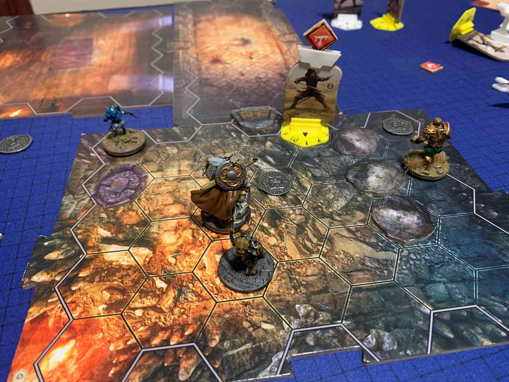
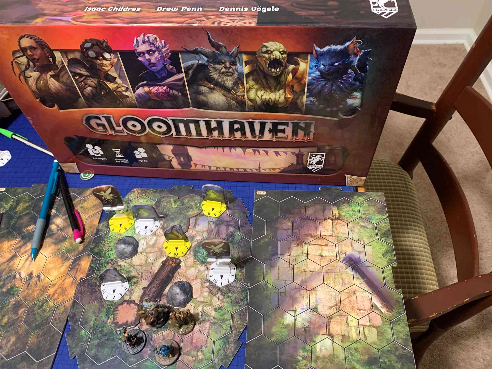

Summon the Stars: A Coop Variant for Wingspan
(yeah you read that right)

We all value games differently. Some of us love winning above all else, but most have other more subtle and unconscious biases. Summon the Stars forces players to expose what they value most in the game, whether consciously or unconscoiusly. In Summon the Stars players will score points to turn back the clock and repel the invaders, and may optionally work together to balance the humors. After the final round, players will achieve a unique ending based on how far the clock has been turned back and whether the humors are balanced. Different endings both have inherint rewards (such as signing the board and beating difficult challenges) and legacy rewards (new content and upgrading personal characters)
This game is a proof of concept for whether reading a rulebook and playing a game can expose unconscious bias about what players value in a game. The game also works to kickstart conversation more broadly about what players value.
Rules
To play you will need a standard copy of Wingspan, and a printout of the humors board, and a character sheet for each player.
(Click here for a pdf of the humors board)
(Click here for a pdf of the character sheets)
Setup a standard game for 2-5 players.
Do not deal out starting bonus cards (although players may gain bonus cards through other means)
Do not setup the objectives board.
If it is your first time playing enter the current date and number of players into (this page). It will determine th
Expansions
Players are free to add extra bird packs, but proper content expansions run the risk of making the game too easy. Players more familiar with the expansions are free to tweak numbers to levels that seem appropriate. Conquoring numbers are supposed to be difficult to achieve on a first play, but possible after a few upgrades. Remember players start the game with 6 birds instead of 3 and have a unique player power.
